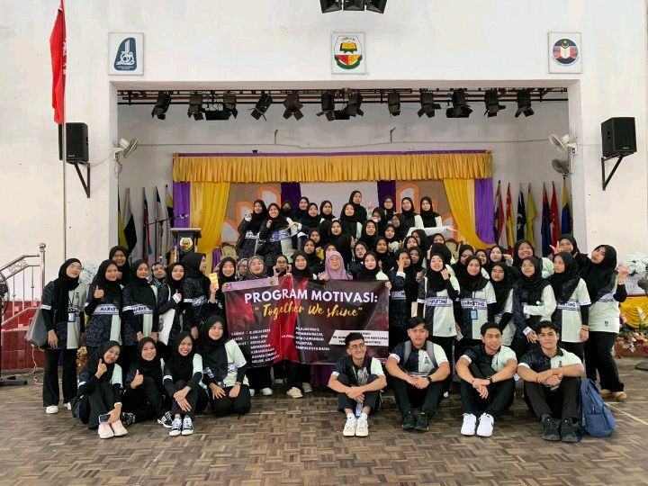

I am delighted to announce i participation in various activities at SMK Sultan Ismail. Over the course of my time at the school, I engaged in a multitude of endeavors, from academic and sports-related activities to clubs and community initiatives. These experiences have not only broadened my skill set but have also allowed me to connect with fellow students, teachers, and the broader school community.

I successfully fulfilling the requirements of my community service program, I am pleased to report that I have satisfactorily completed the mandated hours of service.
This experience has allowed me to contribute meaningfully to our community while also affording me a valuable opportunity for personal growth and reflection. I am grateful for the chance to make a positive impact, and I look forward to continuing to support local initiatives even beyond the program's conclusion.